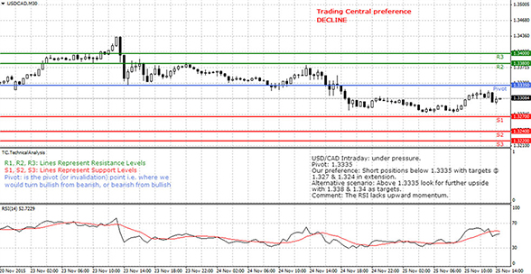
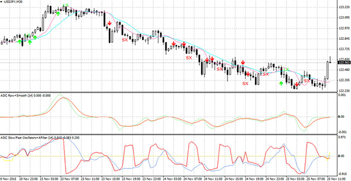
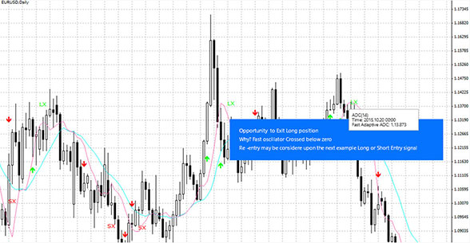

Award-winning fusion of automated analytics & analyst research
Trading Central is a leading provider of real-time investment research based upon technical analysis from a consortium of investment banks and asset managers. The expert reports cover all major FX pairs, indices and commodities with 10 updates per day for each product. Trading Central now offers their own technical indicator providing you with buyll signals on your MT4 platform. Please contact our support desk for more information.

Diversification may be part of your risk management strategy and that is why we offer multiple products and instruments on MT4. You can trade plenty of currency pairs, gold and silver as well as a range of index and commodity CFDs on a Classic account, one of the various MT4 account options that we have to suit traders’ requirements from beginner to professional level.
Make informed decisions
The MT4 platform, or forex software, comes with an advanced charting package and 30+ technical indicators to support your trading decisions. We want you to be able to take full advantage of the platform's features and get a well-rounded view of the markets. That’s why our Live account clients get free access to a set of research tools. You’ll receive audio market commentary covering all the major asset classes, insightful technical analysis reports and sophisticated chart-pattern recognition tools*.
*Some of these tools are subject to a minimum deposit.
a.Alpha Generation Indicators
Supporting confident investment decisions.
Alpha Generation offers investors three innovative MT4 tools to help improve investment returns on a risk-adjusted basis. These indicators are superimposed within the MT4 charts already known and loved by the industry!
-Analyst Views

Your trusted source for target levels.
Trading Central is always there with a directional perspective on every chart based on our award-winning technical analysis methodology. Get an instant viewpoint on our preferred direction along with target levels superimposed onto the charts of actively traded instruments! Discover our alternative scenario based on a pivot level where we would change our view and offer target levels in the opposite direction.
b. Adaptive Candlesticks
Your view into the bulls & bears. Traders love candlestick charts, and now get instant access to the candlestick patterns that illustrate important changes in supply and demand lines and the struggles between buyers and sellers. This indicator gives you access to:
·Our favourite patterns: Our indicator scans for sixteen of our favourite time-trusted candlestick patterns, instantly on any chart!

·Expert filtering for what’s important: We combine candlesticks with our unique quantitative and technical analysis expertise to focus in on only those patterns that are relevant for decision making based on current context.

c.Adaptive Divergence Convergence
If you like MACD, you’ll love this indicator for your short-term trading!
It’s useful at shorter lengths than MACD and offers more timely signals, while also guarding against sideways movements by adapting and lengthening during such periods. Gain access to:


·Long & short entry/exit signals
·Slow & fast price indicators
·Raw & smooth signal lines
·Oscillators- Slow & Fast
a.Probabilistic Market Classifiers
It is a true but frequently-overlooked fact is that the majority of indicator-derived trading signals lose money in sideways markets. The root cause is that the logic behind their design implicitly views the markets as either bullish or bearish and lacks a strategy for dealing with sideways. Even where a strategy exists there is a problem of knowing when a sideways period has begun so that it can be applied. PROBABILISTIC MARKET CLASSIFIERS (PMCs) deliver probabilities of markets being bullish, bearish or sideways based on Bayes' rule and market classification. They offer a capability to confirm a market class indicated by a trading signal so that unconfirmed trading signals can be ignored and potential losses avoided. The onset of a sideways market may also be an opportune time to look at selling options and PMCs are probably unique in offering both entry and exit signals to take advantage of the decay of time premiums.
The PMCs will give you a probability between 0 and 100 for a bearish, sideways and bullish market. EUR/USD weekly chart. In May 2014 when the EUR/USD was trading around 1.3610 the PMC indicator point started to point toward a high probability of decline (red line).
You can also combine multiple periods for a better probability outlook. We recommend using 5, 8 and 13 in the input periods parameter.
b. Probabilistic Stops
An obvious reason for wanting probabilistic stops is to bring greater consistency to the chances of being stopped out; by finding a best-compromise price to allow for normal fluctuations but trigger the stop if the underlying price moves against the trade. Statistical pedigree of probabilistic stops allows their usage to be extended to at least two applications: (i) assessing trading risk before entering a trade and(ii) in combination with support and resistance data to generate probability - related entry signals.
Unlike standard time series with a single data point at each time step, market time series usually arrive in the form of bars of open, high, low and close prices. For the purpose of calculating price movements likely to trigger stops, high and low price extremities from a signal line need to be taken into account. You must be familiar with the average (mean, µ) of a series of data points and their dispersion around that mean (standard deviation, s). A Gaussian distribution describes random noise and is based solely on a mean and standard deviation. For the present purposes the salient property is that the probability of noise deviating from the mean can be related to the number of standard deviations.
The rationale for stop orders is to protect a trade from excessive losses. The fact that there is a trade means that there are external reasons for believing prices will move in a certain direction. Stops need to be wide enough not to be triggered by routine price fluctuations but close enough to be triggered if the underlying price signal (i.e. local mean) behaves contrary to expectations. Given this requirement, a stop should reflect the reasonable limit of price fluctuations from wherever the local mean (µ) is currently.
This means that if a suitable local mean and standard deviation can be found, the probability of the stop being triggered by noise fluctuations alone can be related to the product of a "width" parameter (w) and a local standard deviation, built or hung from a local mean; i.e. µ ± w s with the sign depending on whether it is a buy (+) or sell (-) stop.
The width parameter (w) may vary depending on the instrument and strictly should be found by trial and error for each instrument. In practice, a value of 2 seems to work quite well for most, which is consistent with a value often used for Gaussian-based confidence limits.
In the input parameter box you can chose the length and width of the probabilistic stops you want to set-up.
USD/CAD 15 min chart. TRADING CENTRAL Probabilistic Stops Indicator helps you see on any time frame where stop levels could be positioned
a.Regularised Momentum
Momentum can be a noisy quantity that needs to be averaged before sensible inferences can be made. Frequently, the inferences needed are turning points preceding price turning points. Lag associated with averaging and too many minor momentum turning points impair the quality of trading inferences. Regularization is a smoothing technique, acknowledged to be better than that from averaging alone, which can remove unwanted momentum turning points and offers less lag for the same degree of smoothness.As a result, momentum’s trading significance is concentrated into those turning points that remain; so profitable inferences are much easier to make. A further by - product is an ability to create useful momentum indicators and oscillators with very short lengths; to offer an early warning system of impending price moves.
GBP/USD 4 hours chart

b. Regularised Buying Selling Pressure
BUYING SELLING PRESSURE (BSP) reflects the underlying tendency of close prices to cluster near the highs in an uptrend and near the lows in a downtrend. BSP is a noisy signal and regularization helps in getting rid of noise and thus makes it useful as a trading indicator. GBP/JPY daily chart.
c. Regularised RSI
RSI is defined in Wilder’s 1978 book "New Concepts in Technical Trading systems" and is widely documented. It is used as an operand with an exponential smoothing constant of one and regularization parameter typically of unity. This usage means regularization is being used only for smoothing
USD/CAD weekly chart. TRADING CENTRAL regularized RSI offers less signals and less lags than traditional smoothing technics.